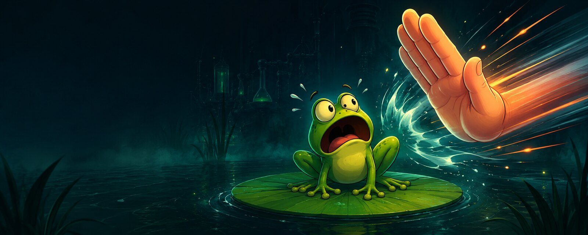

Charakter bis in
die Fingerspitzen.
Weiche Formen, warme Farben und eine Welt, die wie von Hand modelliert aussieht.
Von Remedion Games · Für Android in Entwicklung
CLAY HERO
Ein kleiner Held aus Knete. Eine Welt voller Abenteuer. Und du mittendrin.
Handgemachter Look. Große Heldenmomente.

Eine Welt mit eigener Handschrift
Clay Hero verbindet eine verspielte Knetoptik mit einem Heldenabenteuer für dein Smartphone. Hier wächst unser nächstes großes Herzensprojekt.
Weiche Formen, warme Farben und eine Welt, die wie von Hand modelliert aussieht.
Mit Schwert und elementaren Fähigkeiten stellt sich unser Knetheld seinen Herausforderungen.
Im geschlossenen Test helfen uns deine Eindrücke zu Steuerung, Kämpfen und Spielgefühl.
Dein erster Schritt ins Abenteuer
Der geschlossene Test ist nur für Android verfügbar. Hilf mit, Clay Hero zu verbessern. Sende uns deine Gmail-Adresse über das Formular und wir melden uns, sobald wir dich zum Test einladen können.
Die Vormerkung schaltet den Test noch nicht frei. Die Teilnahme erfolgt später über eine separate Google-Play-Einladung.
Auch von Remedion Games
Unser Frosch-Chaos bleibt. Entdecke FrogSlap, den Spielguide und die Geschichten aus seiner Welt.
Zu FrogSlap
Unabhängig. Persönlich. Aus Österreich.
Ich bin René, der Entwickler hinter Remedion Games. Mit Clay Hero entsteht mein nächstes Abenteuer – mit viel Arbeit, eigenem Charakter und deiner Unterstützung.
Lerne das Studio kennen